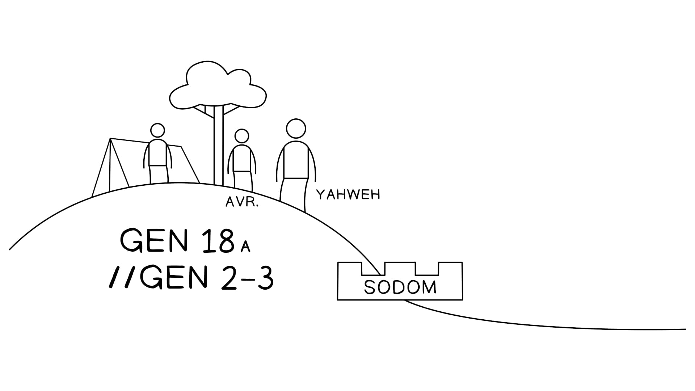

aa1616 E os homens se levantaram daliAnd the men arose from there,,
bbe olharam para baixo sobre Sodomaand they looked down upon Sodom..
ccAgora, Avraham ia com eles, para despedi-losNow, Avraham was going with them, to send them off,,
1717 e Iavé disseand Yahweh said,,
"Deveria eu esconder de Avraham "Should I hide from Avraham o que estou prestes a fazerwhat I am about to do??
1818 Porque Avraham certamente se tornará For Avraham will certainly become uma grande naçãoa nation great e poderoso, and powerful,
e and todas as naçõesall nations da terra descobrirão of the land will discover bênçãoblessing por meio dele; through him;
1919 De fato, Indeed, Eu o conheçoI have known a ele, him,
para que eleso that he would ordenar a seus filhos e à sua casa depois dele, command his sons and his house after him,
que eles that they should guardar o caminho de Iavékeep the way of Yahweh,,
by by fazendo o que édoing what is o que é reto e justoright and just
para que Iavéso that Yahweh will traga sobre Avraham o que tem falado sobre ele." bring upon Avraham what he has spoken about him."
2020 E Iavé disseAnd Yahweh said,,
""O clamor (The outcry (זעקה)) contra Sodoma e Gomorra, é imenso, against Sodom and Gomorrah, it is huge,
e sua prevaricação, é grave, muitíssimo.and their failure, it is heavy, very much.
2121 Devo descer, I should go down,
para que eu veja se so I can see if o clamor (the outcry (צעקה)) que chegou à minha presença, that has come before me,
é is o que eles completamente fizeramwhat they have completely done,,
e se não, então and if not, then eu sabereiI will know."."
aa2222 E os homens dali se viraramAnd the men turned from there,,
bbe foram para Sodomaand they went to Sodom..
ccAgora, Avraham ainda estava em pé diante de IavéNow, Avraham was still standing before Yahweh..
Gênesis 18:16-33Genesis 18:16-33. Tradução e Design Literário por Tim Mackie para BibleProject Classroom: Abraão (2021).. Translation and Literary Design by Tim Mackie for BibleProject Classroom: Abraham (2021).
O discurso interno de Deus em Gênesis 18:17-21 é semelhante aos discursos divinos de Gênesis 6:5-7 e Gênesis 11:5-7, onde Deus delibera sobre o que deve fazer dado o surgimento da violência humana arruinando a terra.God's internal speech in Genesis 18:17-21 is similar to the divine speeches of Genesis 6:5-7 and Genesis 11:5-7, where God deliberates about what he should do given the outbreak of human violence ruining the land.
Observe como em Gênesis 18:22, somos informados de que Avraham está em pé bem ao lado de Iavé enquanto Iavé fala consigo mesmo. Embora Iavé esteja "perguntando" a si mesmo a questão, parece óbvio que ele quer incluir Avraham na conversa, que é o que acontece quando ele fala em Gênesis 18:23.Notice how in Genesis 18:22, we're told Avraham is standing right next to Yahweh as Yahweh talks to himself. Even though Yahweh is "asking" himself the question, it seems obvious that he wants to include Avraham in the conversation, which is what happens when he speaks up in Genesis 18:23.
88 Mas Noé achou graça aos olhos do SENHOR. But Noah found favor in the eyes of the LORD. 99 Estes são os registros das gerações de Noé. Noé era These are the records of the generations of Noah. Noah was justo, sem culparighteous, blameless em sua geração; Noé in his generation; Noah caminhou com Deuswalked with God..
Então o SENHOR disse a Noé: "Entra na arca, tu e toda Then the LORD said to Noah, "Enter the ark, you and all toda a tua casayour house, pois só a ti eu vi ser , for you alone I have seen to be justo diante de mimrighteous before me nesta geração." in this generation."
Então ele creu no SENHOR; e isso lhe foi creditado como Then he believed in the LORD; and he reckoned it to him as retidãorighteousness..
Agora, quando Abrão tinha noventa e nove anos, o SENHOR apareceu a Abrão e lhe disse: "Eu sou Deus Todo-Poderoso; Now when Abram was ninety-nine years old, the LORD appeared to Abram and said to him, "I am God Almighty; ande diante de mimwalk before me, e seja , and be sem culpablameless."."
Eu o conheço, para que ele ordenasse a seus filhos e I have known him, so that he would command his sons and sua casahis house depois dele, que guardem o caminho do SENHOR, fazendo after him, that they should keep the way of the LORD, by doing retidãorighteousness e justiça, para que o SENHOR traga sobre Avraham o que tem falado sobre ele. and justice, so that the LORD may bring upon Abraham what he has spoken about him.
Deus escolheu Noé e poupou sua família por causa da justiça de Noé (Gn 6:8-9; 7:1). Além disso, foi após a libertação de Noé que ele fez uma oferta subindo como aroma agradável que expiou o mal da humanidade e compeliu Deus a trazer uma nova criação (Gn 8:20-22). Assim, agora Deus inclui Avraham, que também é justo diante de Deus (15:6). No entanto, diferente de Noé, Avraham deve falar e pedir por sua família (isto é, Ló e sua família) para ser poupada da ruína de Sodoma.God chose Noah and spared his family because of Noah's righteousness (Gen. 6:8-9; 7:1). Also, it was after Noah's deliverance that he made a going-up offering that atoned for humanity's evil and compelled God to bring about a new creation (Gen. 8:20-22). So now God includes Avraham, who is also righteous before God (15:6). However, different from Noah, Avraham must speak up and ask for his family (i.e., Lot and his family) to be spared from the ruin of Sodom.
Esta introdução à história de Sodoma começa com uma combinação de motivos reunidos de histórias anteriores na mesma função temática: o momento em que o mal humano começa a aumentar tanto que Iavé não pode ignorá-lo.This introduction to the Sodom story begins with a combination of motifs that are gathered from previous stories in the same thematic slot: the moment that human evil begins to increase so much that Yahweh cannot ignore it.
As palavras de Iavé, faladas a si mesmo (exatamente como em Gn 6:5 e Gn 11:6-7), usam todas as palavras-chave dos discursos divinos sobre o assassinato de Caim, a violência antes do dilúvio e a construção da cidade e da torre de Babilônia.Yahweh's words, spoken to himself (just like in Gen. 6:5 and Gen. 11:6-7), use all the key words from the divine speeches about Cain's murder, the violence before the flood, and the building of the city and tower of Babylon.
Sodoma, Qaim, o Dilúvio e BabilôniaSodom, Qayin, the Flood, and Babylon. Criado por Tim Mackie para BibleProject Classroom: Abraão (2021).. Created by Tim Mackie for BibleProject Classroom: Abraham (2021).
O resultado dessas analogias é que Sodoma e Gomorra se tornam uma amálgama da cidade de sangue de Caim, da geração do dilúvio e da arrogância de Babilônia. É um ícone da cidade humana de idolatria e violência, onde os inocentes sofrem e clamam a Deus.The result of these analogies is that Sodom and Gomorrah become an amalgamation of Cain's city of blood, the generation of the flood, and the hubris of Babylon. It's an icon of the human city of idolatry and violence, where the innocent suffer and cry out to God.
O retrato de Sodoma feito por Ezequiel parece basear-se em toda essa rede de analogias, não apenas na história de Gênesis 19.Ezekiel's portrait of Sodom seems to be based on this entire network of analogies, not just the story in Genesis 19.
4848 Enquanto eu viver, declara o Senhor Deus, vossa irmã Sodoma e suas filhas não fizeram o que vocês e vossas filhas fizeram. As I live, declares the Lord God, your sister Sodom and her daughters have not done as you and your daughters have done. 4949 Eis, esta foi a culpa de vossa irmã Sodoma: ela e suas filhas tiveram Behold, this was the guilt of your sister Sodom: she and her daughters had orgulhopride, foram , they were cheias de comidaoverfilled with food, e , and folgacalm ease, mas , but não fortaleceram a mão do pobre e do necessitadodid not strengthen the hand of the poor and needy. . 5050 Elas foram They were altivashaughty e fizeram uma abominação diante de mim. Assim eu as removi, quando vi isso. and did an abomination before me. So I removed them, when I saw it.
Palavras-chave adaptadas pelo professorKey Words Adapted by Teacher
O discurso de Iavé (Gn 18:17-19) sobre Avraham (que ele aparentemente diz em voz alta, em pé ao seu lado!) é revelador, e dá ao leitor nova e desenvolvida compreensão do propósito de Deus ao selecionar Avraham.Yahweh's speech (Gen. 18:17-19) about Avraham (which he apparently says out loud, standing next to him!) is revealing, and gives the reader new, developed insight into God's purpose in selecting Avraham.
1717 e Iavé disseand Yahweh said,,
"Deveria eu esconder de Avraham "Should I hide from Avraham o que estou prestes a fazerwhat I am about to do??
1818 Porque Avraham certamente se tornará For Avraham will certainly become uma grande naçãoa nation great e poderoso, and powerful,
e and todas as naçõesall nations da terra descobrirão of the land will discover bênçãoblessing por meio dele; through him;
1919 De fato, Indeed, Eu o conheçoI have known a ele, him,
para que eleso that he would ordenar a seus filhos e à sua casa depois dele, command his sons and his house after him,
que eles that they should guardar o caminho de Iavékeep the way of Yahweh,,
by by fazendo o que édoing what is o que é reto e justoright and just
para que Iavéso that Yahweh will traga sobre Avraham o que tem falado sobre ele." bring upon Avraham what he has spoken about him."
Gênesis 18:16-33Genesis 18:16-33. Tradução e Design Literário por Tim Mackie para BibleProject Classroom: Abraão (2021).. Translation and Literary Design by Tim Mackie for BibleProject Classroom: Abraham (2021).
Iavé não está escondendo o propósito divino de Avraham, mesmo enquanto faz a pergunta. Ele claramente pretende incluir Avraham nas deliberações do propósito divino, e assim Avraham se torna aqui uma verdadeira "imagem de Deus", um humano que é convidado ao conselho divino e que pode influenciar o governo de Iavé sobre o cosmos.Yahweh is not hiding the divine purpose from Avraham, even as he asks the question. He clearly means to include Avraham in the deliberations of the divine purpose, and so Avraham becomes here a true "image of God," a human who's invited into the divine council and who can influence Yahweh's governance of the cosmos.
Iavé remete às suas palavras em Gênesis 12:3, onde escolheu Avraham e sua família para se tornarem um canal de bênção divina para as nações. Esta própria história dá uma aplicação concreta do que essa vocação realmente implica. Avraham estará em pé diante de Iavé e intercederá em favor dos inocentes.Yahweh refers back to his words in Genesis 12:3 where he chose Avraham and his family to become a conduit of divine blessing to the nations. This very story gives a concrete application of what that vocation truly entails. Avraham will stand before Yahweh and intercede on behalf of the innocent.
A sintaxe hebraica de Gênesis 18:19 é intencionalmente complexa, revelando o duplo propósito de Deus.The Hebrew syntax of Genesis 18:19 is intentionally complex, revealing God's dual purpose.
Deus escolheu Avraham a fim de criar uma família que vive em alinhamento com a vontade de Deus, referida por duas descrições: "o caminho de Iavé" e "fazer retidão e justiça". Ambas estas frases são introduzidas aqui pela primeira vez na Bíblia Hebraica, e se tornarão temas significativos por toda a história bíblica.God chose Avraham in order to create a family that lives in alignment with the will of God, referred to by two descriptions: "the way of Yahweh" and "doing righteousness and justice." Both of these phrases are introduced here for the first time in the Hebrew Bible, and will go on to become significant themes throughout the biblical story.
Deus escolheu a família de Avraham para fazer o que é certo para que Deus possa cumprir sua promessa a Avraham, o que remete de volta à citação de Deus de sua própria promessa em Gênesis 12:3.God chose Avraham's family to do what is right so that God can fulfill his promise to Avraham, which links back up to God's quotation of his own promise in Genesis 12:3.
O cumprimento da promessa de Deus a Avraham é condicional à obediência fiel da família de Avraham. Mas, como o próprio Avraham já começou a mostrar, essa condição vai criar sérios problemas, tanto para a família de Avraham quanto para o próprio Deus!The fulfillment of God's promise to Avraham is conditional upon the faithful obedience of Avraham's family. But, as Avraham himself has already started to show, that condition is going to create serious problems, both for Avraham's family and for God too!
A seleção de Avraham "para fazer justiça e retidão" (Gn 18:19) nos dá categorias para o que Avraham está prestes a fazer, que é exigir que Deus opere de acordo com o seu próprio "caminho" fazendo o que é certo e justo em seus tratos com Sodoma e Gomorra.The selection of Avraham "to do justice and righteousness" (Gen. 18:19) gives us categories for what Avraham is about to do, which is demand that God operate according to his own "way" by doing what is right and just in his dealings with Sodom and Gomorrah.
2323 E Avraham se aproximou e disseAnd Avraham drew near, and he said,,
aa"Realmente vocês estão prestes a "Are you really about to varrersweep away os the justosrighteous junto com os along with the perversoswicked??
bbE se houver What if there are cinquentafifty justosrighteous pessoaspeople no meio da cidadein the middle of the city??
a'a'Realmente vocês iriam Would you really varrersweep away??
b'b'Não perdoariasWouldn't you forgive aquele lugar, por causa dethat place, on account of os the cinquentafifty justosrighteous que estão which are dentro delawithin it??
aa2525 Longe de vósFar be it from you fazer tal coisa, to do such a thing,
bbdar a morte a to put to death the justosrighteous junto com os along with the perversoswicked,,
b'b'para que o so that the justosrighteous e and perversoswicked se tornem iguais! become alike!
a'a'Longe de vós!Far be it from you!
ccNão deveria o Shouldn't the quem traz justiçajustice-bringer de toda a terra fazer of all the land do justiçajustice??
2626 E Iavé disseAnd Yahweh said,,
"Se eu encontrar em Sodoma "If I find in Sodom cinquentafifty justosrighteous justos ones no meio da cidadein the middle of the city,,
então then Eu perdoareiI will forgive o lugar inteiro por causa delesthe entire place on account of them..
2727 E Avraham respondeu e disseAnd Avraham answered and said,,
AA""Olha, por favor, eu tentei falar com meu senhor,Look, please, I have attempted to speak to my master,
e eu sou apenas pó e cinzas.and I am but dust and ashes.
BB2828 Talvez aquele Perhaps that cinquentafifty justosrighteous faltarem lacks cincofive,,
o faria você would you fazer a ruínacause the ruin of of a cidade inteira por causa daquelesthe entire city because of those cincofive??
E ele disse,And he said,
CC""Eu nãoI would not fazer a ruínacause ruin se eu encontrar ali if I find there quarenta e cincoforty five."."
AA2929 E ele tornou a falar-lhe e disseAnd he further spoken again to him, and said,,
BB"Talvez se encontrem ali "Perhaps there are found there quarentaforty."."
E ele disse,And he said,
CC""Eu não o fariaI would not do it por causa de on account of quarentaforty."."
3030 E ele disseAnd he said,,
AA"Por favor, não deixes que o meu senhor se irrite, enquanto falo."Please don't let my master burn with anger, as I speak.
BBTalvez se encontrem ali Perhaps there are found there trintathirty."."
E ele disse,And he said,
CC""Eu não o fariaI would not do it se eu encontrar ali if I find there trintathirty."."
3131 E ele disseAnd he said,,
AA"Olha, por favor, eu tentei falar com meu senhor,"Look, please, I have attempted to speak to my master,
BBmas talvez se encontrem ali but perhaps there are found there vintetwenty."."
E ele disseAnd he said,,
CC""Eu nãoI would not fazer a ruínacause ruin por causa dos on account of the vintetwenty."."
3232 E ele disseAnd he said,,
AA"Por favor, não deixes que o meu senhor se irrite, enquanto falo, só desta vez."Please don't let my master burn with anger, as I speak, just this time.
BBTalvez se encontrem ali Perhaps there are found there dezten."."
E ele disseAnd he said,,
CC""Eu nãoI would not fazer a ruínacause ruin por causa dos on account of the dezten."."
3333 E Iavé se foi, And Yahweh went away,
quando terminou de falar com Avraham,when he finished speaking to Avraham,
e Avraham, ele voltou ao seu lugar.and Avraham, he returned to his place.
Gênesis 18:16-33Genesis 18:16-33. Tradução e Design Literário por Tim Mackie para BibleProject Classroom: Abraão (2021).. Translation and Literary Design by Tim Mackie for BibleProject Classroom: Abraham (2021).
Esta história é habilmente desenhada para subverter as expectativas do leitor, e uma segunda leitura mais cuidadosa revira várias impressões feitas numa primeira leitura.This story is cleverly designed to subvert the reader's expectations, and a second, more careful reading overturns a number of impressions made upon a first reading.
Numa primeira leitura, Deus anuncia que vai destruir Sodoma e Gomorra. Avraham sabe que seu sobrinho mora lá, presumivelmente com muitos outros justos, e ele teme que o julgamento de Iavé seja muito amplo. Assim Avraham "pechincha" com Deus, barganhando-o para um número menor de pessoas justas. Iavé concorda, mas nessa interpretação Avraham se torna o professor de Iavé.On a first reading, God announces that he is going to destroy Sodom and Gomorrah. Avraham knows that his nephew lives there, presumably with many other righteous folks, and he's afraid Yahweh's judgment will be too sweeping. So Avraham "haggles" with God, bargaining him down to a lower number of righteous people. Yahweh agrees, but on this interpretation Avraham becomes Yahweh's teacher.
Há problemas com essa interpretação. Avraham configura a conversa como uma troca de barganha, mas as respostas de Iavé subvertem as suposições de Avraham.There are problems with this interpretation. Avraham sets up the conversation as a bartering exchange, but Yahweh's responses subvert Avraham's assumptions.
Avraham é quem para no número 10, e é ele quem encerra a conversa. Gênesis 18:33 diz que "Iavé acabou de falar com Avraham", mas esta é a resposta de Deus a Avraham dizer "só mais esta vez" (אך הפעם), antes de pedir 10. Deus segue a liderança de Avraham aqui.Avraham is the one who stops at 10 people, and he's the one who stops the conversation. Genesis 18:33 does say that "Yahweh finished speaking to Avraham," but this is God's response to Avraham saying "one last time" (אך הפעם), before asking for 10. God follows Avraham's lead here.
Numa segunda leitura mais cuidadosa, Deus convida Avraham ao conselho divino para começar a ensiná-lo "o caminho de Iavé", que significa "fazer justiça e retidão". Avraham não está familiarizado com o caminho de Iavé e, portanto, assume que tem que pechinchar misericórdia de Iavé. Então, Iavé subverte a suposição de Avraham em uma tentativa de ensiná-lo a ser um parceiro fiel, e Avraham só tem sucesso parcial, parando com o número 10.On a second, more careful reading, God invites Avraham into the divine council to begin teaching him "the way of Yahweh," which means "doing justice and righteousness." Avraham is unacquainted with Yahweh's way and so assumes he has to haggle mercy out of Yahweh. Then, Yahweh subverts Avraham's assumption in an attempt to teach him how to be a faithful partner, and Avraham only partially succeeds, stopping with the number 10.
Há um contraste importante entre o que Iavé diz sobre seu chamado de Avraham, e o que Avraham assume sobre o caráter de Iavé.There is an important contrast between what Yahweh says about his calling of Avraham, and what Avraham assumes about Yahweh's character.
Isto é o que Iavé diz sobre o seu "caminho".This is what Yahweh says about his "way."
De fato, eu o conheço, Indeed, I have known him, para que eleso that he would ordenar a seus filhos e à sua casa depois dele, que eles command his sons and his house after him, that they should guardar o caminho de Iavékeep the way of Yahweh, by , by fazendo o que é reto e justo para que Iavédoing righteousness and justice so that Yahweh will traga sobre Avraham o que tem falado sobre ele. bring upon Avraham what he has spoken about him.
Isto é o que Avraham assume sobre o "caminho" de Iavé.This is what Avraham assumes about Yahweh's "way."
Longe de vósFar be it from you para fazer tal coisa, dar a morte ao to do such a thing, to put to death the justorighteous junto com os perversos, para que o along with the wicked, so that the justorighteous e os perversos se tornem iguais! and wicked become alike! Longe de vós!Far be it from you! Não deveria o Shouldn't the quem traz justiçajustice-bringer de toda a terra fazer of all the land do justiçajustice??
A frase "fazer retidão e justiça" é uma expressão idiomática usada para descrever as ações de um líder feitas em favor de seu povo para confrontar as forças da injustiça e da desigualdade, para libertar o pobre e o vulnerável a fim de melhorar sua qualidade de vida. É frequentemente sinônimo de "misericórdia".The phrase "do righteousness and justice" is an idiom used to describe the actions of a leader done on behalf of his people to confront the forces of injustice and inequity, to deliver the poor and vulnerable in order to improve their quality of life. It is often synonymous with "mercy."
Assim David reinou sobre todo Israel; e David So David reigned over all Israel; and David praticava justiça e retidãodid justice and righteousness para todo o seu povo. for all his people.
66 Porque um menino nos nascerá, e um filho nos será dado, e o governo descansará sobre seus ombros; e o seu nome será chamado de Maravilhoso Conselheiro, Deus Forte, Pai Eterno, Príncipe da Paz. For a child will be born to us, a son will be given to us, and the government will rest on his shoulders; and his name will be called Wonderful Counselor, Mighty God, Eternal Father, Prince of Peace. 77 … Sobre o trono de David e sobre o seu reino, para o estabelecer e o firmar … On the throne of David and over his kingdom, to establish it and to uphold it com justiça e retidãowith justice and righteousness desde então e para sempre. from then on and forevermore.
Assim diz o SENHOR: "Thus says the LORD, "Fazei justiça e retidãoDo justice and righteousness, e liberta o que foi roubado da mão do seu opressor. Não oprimais nem façais violência ao estrangeiro, ao órfão ou à viúva; e não derrameis sangue inocente neste lugar.", and deliver the one who has been robbed from the power of his oppressor. Also do not mistreat or do violence to the stranger, the orphan, or the widow; and do not shed innocent blood in this place."
1515 "Ser rei vos faz ter cada vez mais cedros? Vosso pai não tinha comida e bebida? Ele "Does it make you a king to have more and more cedar? Did not your father have food and drink? He praticava retidão e justiçadid righteousness and justice, e tudo lhe correu bem. , so all went well with him. 1616 Ele defendeu a causa do pobre e do necessitado, e assim tudo lhe correu bem. Não é isso conhecer-me?" declara o SENHOR. He defended the cause of the poor and needy, and so all went well. Is that not what it means to know me?" declares the LORD.
Palavras-chave adaptadas pelo professorKey Words Adapted by Teacher
55 Suponha que haja um homem justo que Suppose there is a righteous man who pratica justiça e retidãodoes justice and righteousness … … 77 Ele não oprime ninguém, mas devolve o que tomou em penhor por um empréstimo. Não comete roubo, mas dá o seu pão ao faminto e veste o nu. He does not oppress anyone, but returns what he took in pledge for a loan. He does not commit robbery but gives his food to the hungry and provides clothing for the naked. 88 Ele não lhes empresta a juro, nem tira lucro deles. He does not lend to them at interest or take a profit from them.
Palavras-chave adaptadas pelo professorKey Words Adapted by Teacher
Se o acima é o que significa para os humanos fazerem justiça e retidão, o que significa dizer que justiça e retidão caracterizam "o caminho de Iavé" (Gênesis 18:19)?If the above is what it means for humans to do justice and righteousness, what does it means to say that righteousness and justice characterize "the way of Yahweh" (Genesis 18:19)?
66 O SENHOR The LORD pratica retidão e justiçaworks righteousness and justice por todos os oprimidos. for all the oppressed. 77 Ele deu a conhecer seus caminhos a Moisés, suas obras ao povo de Israel: He made known his ways to Moses, his deeds to the people of Israel: 88 O SENHOR é misericordioso e bondoso, lento para a ira, rico em amor. The LORD is compassionate and gracious, slow to anger, abounding in love. 99 Ele não acusa sempre, nem retém a sua ira para sempre; He will not always accuse, nor will he harbor his anger forever; 1010 não nos trata conforme os nossos pecados merecem, nem nos recompensa segundo as nossas iniquidades. he does not treat us as our sins deserve or repay us according to our iniquities. 1111 Pois, tanto quanto os céus estão acima da terra, tão grande é o seu amor por aqueles que o temem; For as high as the heavens are above the earth, so great is his love for those who fear him; 1212 tanto quanto o leste está do oeste, tão longe ele removeu de nós as nossas transgressões. as far as the east is from the west, so far has he removed our transgressions from us.
Os "caminhos de Iavé" aqui estão ligados não apenas à justiça e retidão para com os vulneráveis, mas também à compaixão, misericórdia e paciência que se manifestam em perdoar as pessoas e não as tratar conforme os seus pecados merecem.The "ways of Yahweh" here are linked to not only righteousness and justice for the vulnerable but also to compassion, mercy, and patience that are displayed in forgiving people and not treating them as their sins deserve.
O Salmo 103 está repleto de hiperlinks para a narrativa do bezerro de ouro, onde Moisés sobe o Monte Sinai para interceder por Israel da mesma maneira que Avraham o faz por Sodoma. Mas Moisés não barganha; ele é muito mais ousado ao pedir a misericórdia de Iavé. Em contraste, Avraham faz a Iavé uma pergunta diferente.Psalm 103 is packed with hyperlinks to the golden calf narrative, where Moses ascends Mount Sinai to intercede for Israel in much the same way that Avraham does for Sodom. But Moses does not barter; he is much more bold as he asks for Yahweh's mercy. In contrast, Avraham asks Yahweh a different question.
A frase "julgar" e "justiça" (שפט/משפט) também pode ser combinada em "julgar com justiça", um idiomatismo que se refere primariamente a procedimento judicial e a recompensa ou punição.The phrase "to judge" and "justice" (שפט/משפט) can also be combined into "to judge with justice," an idiom that primarily refers to judicial procedure and reward or punishment.
1818 Designareis para vós mesmos Designareis para vós mesmos judges e oficiais em todas as vossas cidades que o SENHOR, vosso Deus, vos dá, conforme as vossas tribos, e eles You shall appoint for yourself judges and officers in all your towns which the LORD your God is giving you, according to your tribes, and they shall julguejudge o povo com the people with julgamento retorighteous judgment..
Ele retém a mão de fazer o mal e He withholds his hand from doing wrong and he faz justiçadoes justice com verdade entre os homens. truthfully between people.
Palavras-chave adaptadas pelo professorKey Words Adapted by Teacher
Aprendei a Learn to fazerdo o bem; buscai good; seek justiçajustice, repreendei o cruel, defendei o órfão, plead pelo causa da viúva., reprove the ruthless, defend the orphan, plead for the widow.
A frase "fazer justiça" ou "julgar com justiça" adota um quadro de tribunal e assume que o juiz é justo, o que significa que os resultados podem seguir dois caminhos.The phrase "do justice" or "judge with justice" adopts a courtroom framework and assumes the judge is fair, which means the results could go two ways.
Os resultados podem ser positivos.The results may be positive.
Porque fizeste For you have feito justiçadone justice por mim e pela minha causa, te sentaste no trono for me and for my cause, you have sat on the throne julgando com retidãojudging with righteousness..
Sabei que Iavé age pela causa dos aflitos, Know that Yahweh acts for the cause of the afflicted, fazendo justiçadoing justice pelo pobre. for the poor.
Os resultados podem ser negativos e resultar em punição.The results may be negative and result in punishment.
Porque naquela noite passarei pela terra do Egito e ferirei todos os primogênitos na terra do Egito, tanto homem quanto besta; e contra todos os deuses do Egito For I will go through the land of Egypt on that night, and will strike down all the firstborn in the land of Egypt, both man and beast; and against all the gods of Egypt farei justiçaI will do justice—Eu sou o SENHOR.—I am the LORD.
Palavras-chave adaptadas pelo professorKey Words Adapted by Teacher
portanto, assim diz o Senhor Deus: "Eis que eu, eu mesmo, estou contra você, e therefore, thus says the Lord God, "Behold, I, even I, am against you, and farei justiçaI will do justice entre vós aos olhos das nações." among you in the sight of the nations."
Palavras-chave adaptadas pelo professorKey Words Adapted by Teacher
Iavé é conhecido como aquele que Yahweh is known as one who faz justiçadoes justice, pela obra de suas mãos os ímpios são capturados …, by the work of his hands the wicked are trapped …

Como esta passagem nos mostra que Sodoma e Gomorra são emblemáticas de violência e injustiça?How does this passage show us that Sodom and Gomorrah are emblematic of violence and injustice?